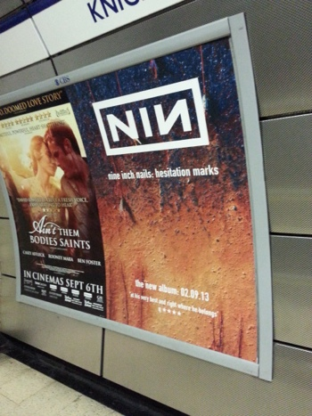
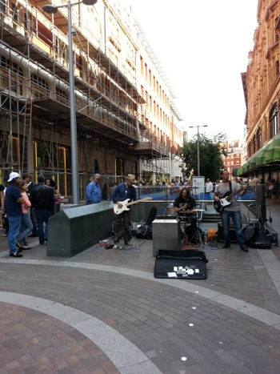
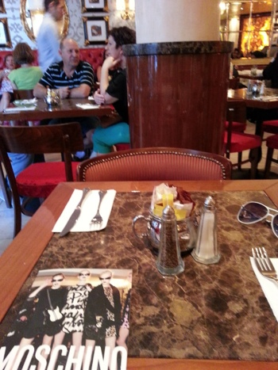
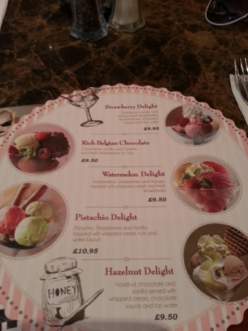
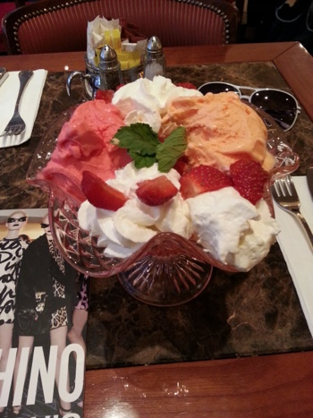

일요일날 슬렁슬렁 센트럴 놀러갔다오고
Bank holiday인 오늘은 얌전히 집에있어야지 - 했는데
날씨가 느므 좋아서 걍 해롯한바퀴 휘리릭 돌고왔다

NIN new album soon 예이 :D

해롯앞에서는 이래 밴드공연중

오늘의 목적은
여름 다 가기전에 Caffe Concerto의
밥한끼만한 아이스크림메뉴를 먹는거^^;;;

내가주문한건 Watermelon Delight
주문할때만해도 저거 다 먹을수있을려나 -_-;;
에잇 배부르면 남기면 되지 뭘;; 이랬는데
내가 날 너무 과소평가 했음 ㅋㅋㅋ

여행일주일 내내 아침저녁으로 아이스크림을 먹고
또 아이스크림 - 것도 이번엔 빅사이즈를 먹으러
몸소 지하철타고 나왔다능;;;;;;
하지만 맛있었어요오 ㅜㅜ 흑흑
여담이지만 내가 주로가는 지점은
피카딜리 리젠트스트릿 / 그린파크역 근처 / 해롯백화점 앞
일케 세군데 인데
종업원이 굉장히 많고 / 손님도 그렇게 붐비지 않은 상황에서조차
자리안내 / 음식주문받기 / 서빙 / 빌가져오는것
뭐 하나 제시간에 이루어지는게 없다;;;;;
쩝;; 하지만 음식이나 아이스크림은 맛나요
케이크 빼고......^^;;;;
내일부터 다시 로동복귀라는게 실감이 안나네잉